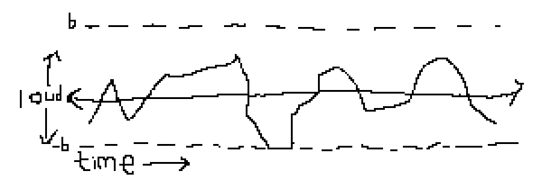
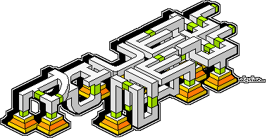
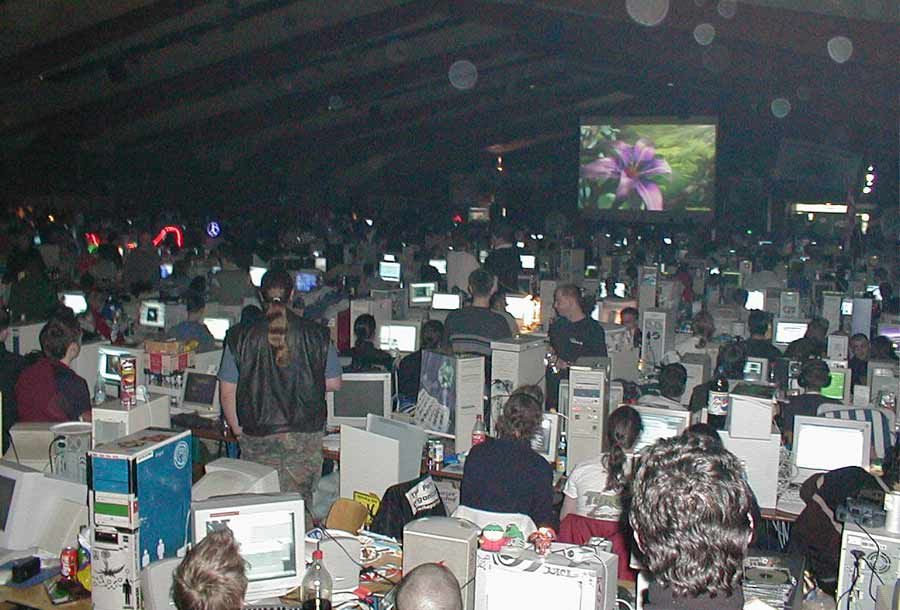
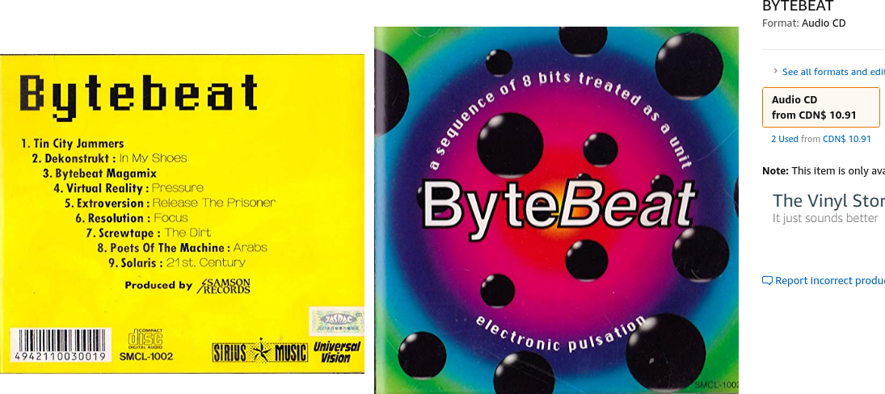
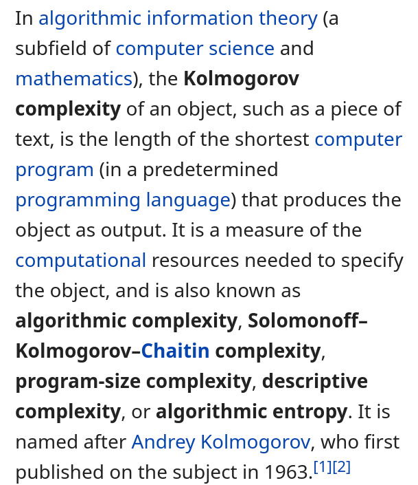

Bytebeats
Noah Weninger
October 25, 2019
Music
- Number theory shows up everywhere in music:
- Time signatures
- Scales
- Frequency relationships
- Consonance/dissonance
- How deep does it go?
Digital sound
- \(f:\mathbb{Z}\to\mathbb{Z}\) where \(|f(t)|\le b\)
- 
Digital music
- Digital sound, but more… periodic


More digital music

f(t)=(t^t/4^t/32)&31

Wat
The 2nd iteration
IBNIZ
Byte?
- The original bytebeat was written to the audio device using
putchar, thus there is an implicit&255which truncates the output to a byte. - This is why the formula
f(t)=tproduces a sawtooth wave with period 256. “Floatbeat?”
Same general idea but the output is a float in \([-1,1]\).
Why would anyone do this?
To answer this question, we need to dive into the history of computer art…





The backstory
“It all started a couple of months ago, when I encountered a 23-byte C-64 demo, Wallflower by 4mat of Ate Bit, that was like nothing I had ever seen on that size class on any platform. Glitchy, yes, but it had a musical structure that vastly outgrew its size. I started to experiment on my own and came up with a 16-byte VIC-20 program whose musical output totally blew my mind.” - Viznut 2011

More examples / an online editor
t%(t/(t>>9|t>>13))|t*((t>>9|t>>13)%16)/8
Critique
- Okay, so this similarity between sound waves and bitwise functions is weird & cool… but lots of people don’t like the music it produces.
- It actually causes some people to feel panicked and on high alert
- Recall the pervasiveness of number theory in music: Can we use the same functions in a different way?
More abstraction
- We’ve been looking at writing out sound waves directly from our bytebeats
- But when a composer writes a song, they don’t draw waveforms by hand.
- What if we write a MIDI file where the notes are decided by a bytebeat?
MIDI bytebeat
1 hour later…
if t%64==0:
s=(s>>9)|((s&((1<<11)-1))<<3)
play(0,0,toscale(s,(t//2&t//5|t//8&t//16)%36+60),t/8,1/8,127)
play(1,1,toscale(s,(t//5|t//8|t//16)%12+36),t/8,1/8,127)(full code in the repo)
Spectral bytebeat
- Generating waveforms directly gives very “bleepy” output.
- How about using bytebeats to control the parameters of a synth?
- The “synth” of choice… fast fourier transform
Spectral bytebeat
int feed[2][fft_size];
void fill(cplx *buf[2], int n, double t) {
for (int c = 0; c < 2; c++) {
for (int i = 1; i < n; i++) {
int r = (int)(t*12)*n/2+i+feed[c][i];
feed[c][i] += r/16^r/63^r/1023^c;
if (int mod = (r/16^r/65^r/1024))
feed[c][i] %= mod;
buf[c][i] = (exp(cplx(0.0,M_PI*
sin(M_PI*feed[c][i]/double(n-i)))))
/pow(i+1, 1.0)/2.0;
} } }See tinyspec
Making beats
i = 0
while True:
t = i%16 + i//64*16
x = t^t>>1^t>>2
y = x%(len(msgs)+1)
if y != 0:
osc_send(msgs[y-1], tag)
time.sleep(1/8)
osc_process()
i += 1(full code in the repo)
Future “bytebeat”
- Get a live band to perform a bytebeat track
- Generating images/videos by feeding bytebeats into 2D/3D IFFT
- Search for a function representing a well known melody/beat as a complexity measure and to find similar melodies/beats
- Explore/understand how to effectively use feedback
- Apply bytebeat patterns to different musical parameters
Theory
- Often gaining intuition about the whole formula is challenging.
- I like to look at bytebeat composition under the lens of local entropy:
- Consider the arguments to an operator to be random variables and think about the distribution of the output.
Theory
Let \(X_1,X_2\) be uniformly sampled from \(\{0,1\}\). Then \[\Pr[X_1 \text{ xor } X_2 = 1]=1/2\] \[\Pr[X_1 \text{ or } X_2 = 1]=3/4\] \[\Pr[X_1 \text{ and } X_2 = 1]=1/4\] So XOR preserves entropy while AND and OR reduce it, biasing towards either 0 or 1.
Theory
- Addition and subtraction even further increase entropy due to carries between bits
- Division by some constant increases/decreases entropy depending on common factors
- Multiplication generally increases entropy
Theory
- Output is “too noisy” -> change operators to reduce entropy or remove subexpressions
- Output is “too plain” -> change operators to increase entropy or add subexpressions
Composition tips
- Most importantly, experiment and build intuition
- Try crazy things
Common gotchas
- Operator precedence
- Division by zero
- Shifting by more bits than the type
- Language automatically converting things to float
Representability
- We can clearly represent any music as a function: just index into a big array
- So in some sense what characterizes bytebeat is very high computational compressibility

Catchiness
- One factor of how catchy music is is how easily the brain is able to learn and represent it
- Bytebeats are represented by very simple formulas
- Therefore bytebeats are catchy music
- Good music is catchy
- And also all good music is bytebeat
Overzealous generalization
- Everything that people like is highly computationally compressible
- There are small math formulas for all interesting art
Resources
Slide repo
Extras
https://greggman.com/downloads/examples/html5bytebeat/html5bytebeat.html#t=0&e=0&s=32000&bb=5d000001001b0000000000000000141d01f00425d021087b406c8fc1583215ef67aaf4dbfb98cf515fff390c0000 https://greggman.com/downloads/examples/html5bytebeat/html5bytebeat.html#t=0&e=0&s=44100&bb=5d000001001e00000000000000001461cc5e31197925169763d83a2fc92836b2f4fbee7b3baf844f91a0b3fffff93e0000